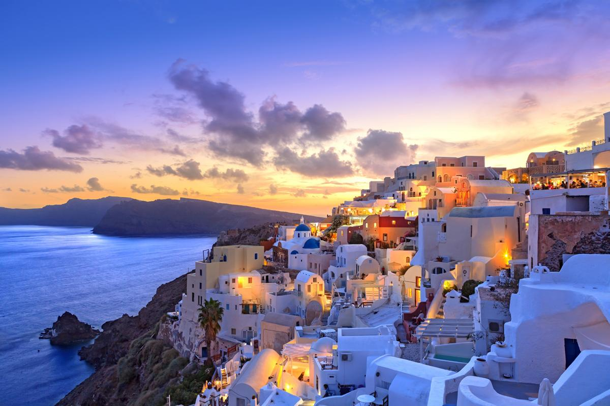

ESPAÑA

ITALIA


Conocido es por todos como el país del romanticismo y del amor y la pieza clave es la capital francesa. Para que no te quedes con dudas sobre qué hacer en Francia y qué ciudades visitar, hacemos un recorrido por las ciudades francesas más importantes.
Cerrar
Es un país que ha sido cimiento de grandes e importantes sistemas que luego se han copiado hacia otros países. El sistema jurídico, la iglesia anglicana y el idioma inglés (que es el más utilizado a nivel mundial) son algunos de los aportes de este país que se han extendido por todo el mundo.
CerrarSuiza es conocida internacionalmente por su turismo de montaña, sus relojes, chocolates, quesos, navajas, ferrocarriles y el secreto bancario. Es una república federada formada por 26 estados llamados cantones. Su capital es Berna, aunque el sector privado está desarrollado en ciudades como Ginebra, Zürich y Basilea.
Cerrar¿Qué tan buena es la vida en Portugal? Portugal es actualmente considerado uno de los mejores países para vivir. Esto sucede no sólo por el excelente clima, la buena comida y la amabilidad de los portugueses, sino también porque el país tiene una serie de ventajas para aquellos que deciden mudarse a Portugal
Cerrar